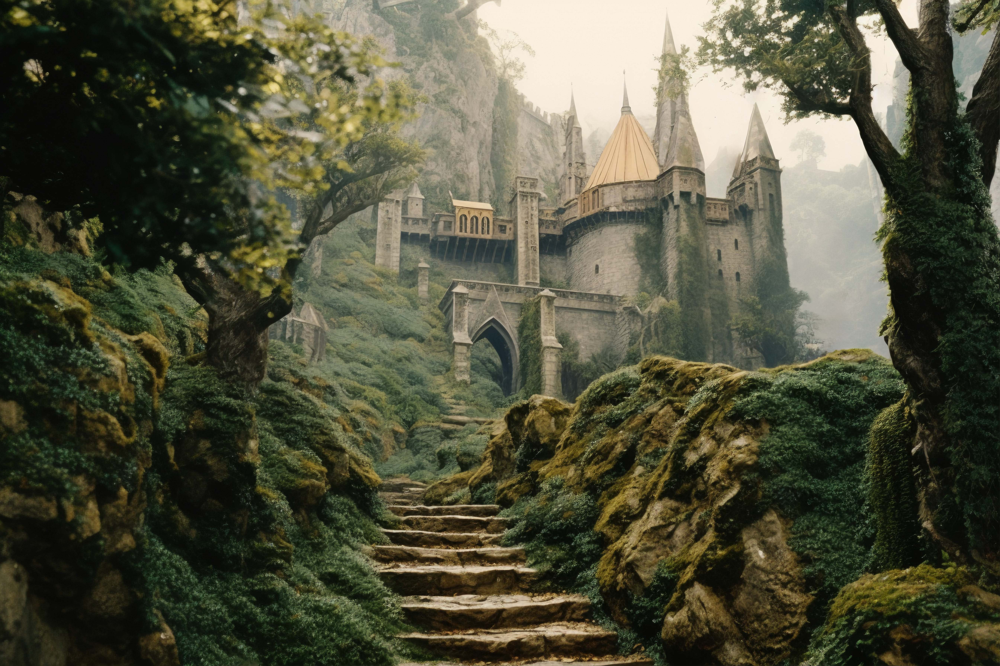

Войди в мир вечной ночи
Nocturna — пристанище для тех, кто находит красоту в тени, утешение в тишине и истину в древних камнях.
Наше сообщество хранит знания, которые время забыло.
Пути познания
Архив теней

Изучите манускриппы, написанные при лунном свете. Трактаты по алхимии, гримуары и хроники вампирских родов.
Галерея призраков

Взгляните в глаза вечности. Коллекция портретов, фотографии заброшенных соборов и символические полотна.
Мастерская скорби

Научитесь искусству готической эстетики: создание свечей, каллиграфия чернилами ночи и композиции из засушенных роз.
Ритуалы сообщества
Полуночная месса

Ежемесячные собрания в старинной часовне. Чтение поэзии, живая музыка в стиле darkwave и тихие беседы.
Экскурсии в забвение
Паломничества по забытым некрополям и замкам с привидениями в сопровождении нашего хранителя.
Ночные бдения

Личный ритуал поминовения в нашем склепе. Возможность провести ночь с древними артефактами.
Столпы нашей веры
Вечность

Мы верим, что смерть — это врата, а не конец. Наследие души переживает тлен.
Тайна
Не все должно быть явлено свету. Истинная красота рождается в полумраке и недосказанности.
Предание

Мы чтим мудрость предков и храним обряды, которые современный мир отверг.
Искренность

Наши эмоции — от глубокой скорби до мрачной радости — подлинны и не терпят суеты.